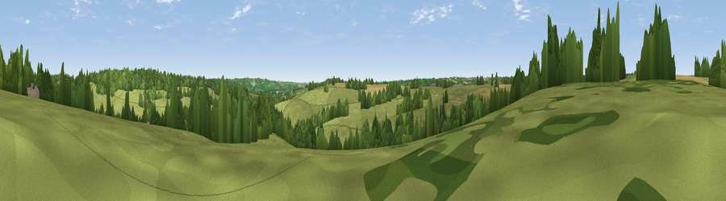

Viewpoint near Upper Slaughter
#40772 in England · top 85% of its area beats it · near Upper SlaughterThe view, rendered

A 360° render of this exact spot computed from the terrain model, tree cover and land cover — summer colours, afternoon light, calibrated against photographs of famous viewpoints. Real trees, hedges and buildings will differ in detail.
The panorama
Grey silhouette: terrain skyline in each direction (720 bearings, Earth curvature and refraction included). Dashed green: skyline with trees (+15 m) and buildings (+8 m) as obstacles. Blue strip: how far the ground is visible on each bearing.
Where the view opens
Wedge length = distance to the farthest visible ground on that bearing (vegetation-aware). Rings at 10, 25 and 50 km.
What fills the view
65% grassland · 20% woodland · 14% cropland
Angular shares of the visible panorama (visual magnitude), not map area. Landscape diversity 0.39 (0–1 Shannon).
Key numbers
More beautiful places nearby
The staircase of upgrades: each row has a higher view potential than everything closer. Driving times are estimates from straight-line distance, calibrated against real road routing — check an actual route before setting out.
| Place | Direction | Drive | Score |
|---|---|---|---|
| Viewpoint near Guiting Power | W · 4 km | ~9 min | 31.4 |
| Viewpoint near Temple Guiting | WNW · 4 km | ~9 min | 47.2 |
| Viewpoint near Stow-on-the-Wold | E · 5 km | ~10 min | 48.4 |
| Viewpoint near Stow-on-the-Wold | ENE · 5 km | ~11 min | 49.5 |
| Viewpoint near Icomb | ESE · 6 km | ~13 min | 63.9 |
| Roel Hill | W · 9 km | ~18 min | 67.6 |
| Viewpoint near Hailes | WNW · 10 km | ~19 min | 69.6 |
| Salter's Hill | WNW · 11 km | ~21 min | 72.3 |
51.92041, -1.79166 · source: screening · position refined by local search. Computed location — check access rights before visiting.